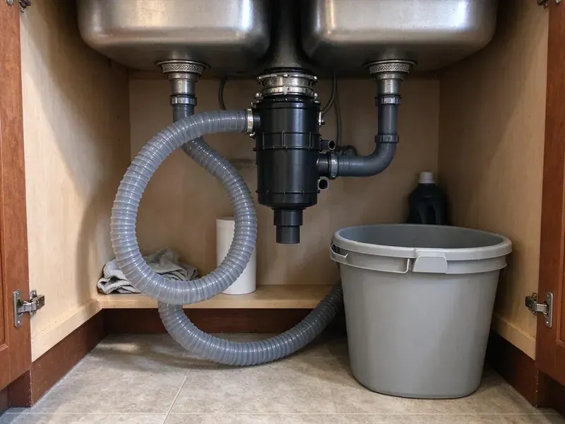

Kitchen Plumbing in South Charleston, WV
Got a kitchen plumbing issue in South Charleston, WV? We provide reliable service for everything from dripping faucets to stubborn drain clogs.
- Same-Day Kitchen Plumbing Help
- Fast Local Service
- Residential and Commercial Kitchens
- Satisfaction Guaranteed
Get Your Kitchen Sink and Disposal Working Again in South Charleston, WV.
Don't let a clogged drain or broken disposal throw off your home, reach out today for dependable service.
Complete Kitchen Plumbing Services for Homes and Businesses in South Charleston, WV
At GJK Plumbing, we specialize in all aspects of kitchen plumbing for homes in South Charleston. From routine maintenance to emergency repairs, our experienced technicians are equipped to handle any challenge quickly.
Our expertise includes:
- Kitchen sink and faucet installation
- Install, pump and repair commercial grease traps and interceptors
- Garbage disposal repair and replacement

Additional Kitchen Plumbing Services in South Charleston, WV
Our kitchen plumbing services in South Charleston, WV cover sinks, disposals, dishwashers, and grease traps so your kitchen stays clean, safe, and fully functional.


Customers
Why Choose GJK Plumbing for Kitchen Plumbing in South Charleston, WV?
For restaurants, grease trap problems can lead to backups and failed inspections. We help keep your kitchen compliant and open.
- Qualified Team, Our plumbers are licensed, insured, and continuously trained on the latest plumbing tools and safety protocols.
- Clear Pricing, You'll always receive transparent, upfront pricing before any work begins, so there are no surprises on your bill.
- Local Knowledge, We understand the specific plumbing codes and common issues affecting homes in South Charleston, WV.
Citywide Coverage
We make sure that residents across South Charleston have access to expert kitchen plumbing services. Our local presence means quicker response times and plumbers familiar with the area's specific building types.
Experienced Team
Our plumbers also service commercial kitchens, including three-compartment sinks, floor sinks, hand sinks and grease interceptors. That experience helps restaurants stay compliant.
Safety-First Approach
We make sure all our kitchen plumbing work is performed safely and up to code, providing peace of mind to South Charleston residents. Our technicians are careful about proper installation and repair techniques to prevent future hazards or violations.
Trusted Certified South Charleston Plumbing Services Professionals
At GJK Plumbing, we take pride in providing certified plumbing services throughout South Charleston, WV. Backed by recognized industry credentials, our experienced plumbers combine technical skill with genuine customer care. Whether it is repair, installation, or maintenance, we follow strict safety and quality standards to deliver lasting results you can trust.
Call Us Now PHCC Plumbing Contractor Recognition
PHCC Plumbing Contractor Recognition Better Business Bureau (BBB) Accreditation
Better Business Bureau (BBB) Accreditation Angi Certified Pro
Angi Certified Pro ISO 9001 Quality Management Certification
ISO 9001 Quality Management CertificationTrusted Kitchen Plumbing Services in South Charleston, WV
Garbage Disposal Installation in South Charleston
If your old disposal is beyond repair or you are adding one for the first time, GJK Plumbing offers hassle-free garbage disposal installation. We help you choose the right horsepower and capacity for your household needs and integrate it perfectly with your existing sink and electrical connections. Proper installation is essential to avoid leaks and ensure efficient operation in your South Charleston kitchen.

Grease Trap Installation & Cleaning in South Charleston
For commercial kitchens in South Charleston, proper grease trap management is crucial for preventing drain clogs and complying with health codes. GJK Plumbing focuses on grease trap installation, ensuring your system is correctly sized and installed to handle your business's demands. We also offer routine grease trap cleaning and maintenance services to keep your system running efficiently and prevent costly backups and fines. Regular service is essential for longevity and compliance.
Kitchen Drain Clog Clearing in South Charleston, WV
Kitchen drains are prone to clogs from food particles, grease, and soap scum. Our plumbers use professional tools like augers and hydro-jetting to clear out stubborn blockages from kitchen sinks and main lines in South Charleston, WV. We don't just clear the clog, we find the cause to help prevent future issues, ensuring your kitchen drains flow freely. Skip harsh chemical drain cleaners that can damage your pipes.
Dishwasher and Ice Maker Hookups in South Charleston
New dishwashers need a hot water line, a drain to the disposal or tailpiece and an air gap or high loop. Refrigerator ice makers need a dedicated cold line with a shutoff. We install both with braided or copper lines and test for leaks. This stops the slow drips that damage cabinet bottoms and floors.
Faucet Repair and Replacement in South Charleston
A dripping kitchen faucet can waste a surprising amount of water and money. GJK Plumbing offers complete faucet repair services, addressing leaks, low water pressure, and faulty handles. If a repair isn't cost-effective, we can help you pick and install a new, water-efficient faucet that suits your kitchen's style. We handle all major brands and types, including pull-down, single-handle, and touchless faucets for homes in South Charleston.
Garbage Disposal Repair & Replacement in South Charleston, WV
A broken garbage disposal can disrupt your entire kitchen. GJK Plumbing offers expert garbage disposal repair for common issues like clogs, jams, leaks, or motor failures. If your unit is beyond repair or you're looking for an upgrade, we provide efficient garbage disposal replacement and installation services across South Charleston, WV. We work with top brands like InSinkErator and Waste King, ensuring you get a durable and powerful unit that fits your needs and budget.
Emergency Kitchen Plumbing in South Charleston, WV
Kitchen plumbing emergencies, like burst pipes under the sink or a completely blocked main drain, need immediate attention. GJK Plumbing provides fast, reliable emergency kitchen plumbing services throughout South Charleston, WV. Our plumbers are ready to diagnose and repair urgent issues quickly, minimizing damage and restoring your kitchen's functionality. Don't hesitate to call us anytime you face a critical kitchen plumbing problem.

Garbage Disposal Repair in South Charleston, WV
Is your garbage disposal humming but not grinding, or worse, completely jammed? Our technicians are experts in diagnosing and repairing all common garbage disposal problems. We can clear clogs, fix motor issues, and replace worn-out components for brands like InSinkErator, Waste King, and Moen. Don't let food waste pile up, we will get your disposal running smoothly again in South Charleston, WV.
Kitchen Plumbing Near Me in South Charleston, WV
Our local presence means we can offer fast response times for kitchen plumbing emergencies and routine service calls throughout South Charleston. You can count on our team to provide knowledgeable and friendly service, ensuring your kitchen plumbing issues are resolved quickly and correctly.
No matter where you are in South Charleston, WV, GJK Plumbing is your trusted local plumbing partner. We pride ourselves on being easy to reach and quick to respond to the needs of our community, ensuring expert kitchen plumbing help is always just a phone call away.
GJK Plumbing at a Glance
- Licensed and insured plumbers serving South Charleston, WV
- 24/7 emergency service with same-day scheduling
- Upfront, flat-rate pricing before work begins
- 4.8-star rated by 832+ West Virginia customers
South Charleston Map
South Charleston Information
- Population
- 13,281
- Area codes
- Local
- Service area
- South Charleston and communities within 40 miles
- Nearby
- Dunbar, Charleston, St. Albans, Nitro
Dependable kitchen plumbing is essential in South Charleston, WV homes. Water hardness in West Virginia ranges from moderate to hard in many areas, and mineral scale is a common issue for water heaters and fixtures. Keeping heat on in unused rooms and letting faucets drip on the coldest nights helps prevent many frozen pipe calls.
Expert Services
Trust our professionals for reliable GJK Plumbing solutions in South Charleston, WV.
Our Specialized Plumbing Services in South Charleston, WV
At GJK Plumbing, we provide a complete range of plumbing services across South Charleston, WV. From leak detection to full system installations, our team ensures fast, precise, and affordable service for both residential and commercial properties. Explore our core services below:


How Our Kitchen Plumbing Process Works in South Charleston, WV
We follow a clear, simple process to ensure your kitchen plumbing service in South Charleston is handled professionally from start to finish.
Request a Quote
Call (681) 223-3607 and tell us about the sink, disposal or drain problem. We schedule a time that works, usually the same day.
Inspect and Quote
Your plumber inspects the fixtures and drain to find the cause. You get a flat-rate price before any work begins.
Fix and Test
We complete the repair or install with quality parts and test everything under use. Then we clean up and explain what we did.
Frequently Asked Questions About Kitchen Plumbing in South Charleston
The cost of kitchen plumbing service in South Charleston varies a lot depending on the specific job. Simple repairs like clearing a minor clog might range from $150 to $350, while a new garbage disposal installation could be $300 to $600. Major projects like full sink replacements or main drain hydro-jetting can cost more. We always provide a detailed, upfront quote before starting any work.
If your garbage disposal is more than 8 to 10 years old, often jams, or requires expensive parts for repair, replacement is often the more cost-effective long-term solution. Newer models are also more energy-efficient and quieter.
Most food service businesses are required to have a grease trap or interceptor under local pretreatment rules. We can size and install one to match your kitchen.
If the unit is under eight years old and just jammed, repair often works. If it leaks from the housing or the motor is failing, replacement is generally better.
GJK Plumbing stands behind our work with a comprehensive warranty on parts and labor for all kitchen plumbing services. Specific warranty details vary by service and parts used, but we always aim for customer satisfaction. Ask our technician for full warranty information during your service visit.
To prevent kitchen drain clogs, avoid pouring grease or oil down the drain, use a drain strainer to catch food particles, and run cold water while operating your garbage disposal. Occasionally flush your drain with hot water and a bit of dish soap. These habits can significantly reduce the risk of blockages in your South Charleston home.
Persistent kitchen sink clogs are often caused by a buildup of grease, food particles, soap scum, and hair in the drain line. Hard water can also leave mineral deposits that narrow pipes. Using chemical drain cleaners can sometimes worsen the problem or damage pipes.
Simple replacements usually do not need a permit. Grease trap installs and drain relocations often do, and we take care of the permit when required.
What People Are Saying About Our Plumbing Experts?

Sofia M.
Two new toilets installed in one visit, no mess left behind, and the tech even adjusted a faucet he noticed was dripping. Fair pricing and really friendly.
Toilet Installation · Cross Lanes, WV
Mark T.
When our office needed drain cleaning, GJK Plumbing provided quick, reliable service. The plumber arrived on time and made sure every drain flowed perfectly before leaving. Very satisfied.
Drain Cleaning · Charleston, WVLaura S.
I scheduled a water heater replacement, and the team made the process smooth and affordable. The new unit works perfectly, and they cleaned up after completing the job.
Water Heater Replacement · Charleston, WV
Daniel K.
A pipe burst at 11 pm and they actually answered. The plumber showed up within the hour, shut everything down, and had us back to normal the next morning. Could not ask for more.
Emergency Plumbing · Cross Lanes, WV
Robert G.
The trenchless sewer replacement saved our front yard. They walked us through the camera inspection footage first so we knew exactly what we were paying for.
Sewer Line Replacement · St. Albans, WV
Patricia H.
We had a slab leak that two other companies could not find. GJK Plumbing located it in under an hour, explained our options, and the price matched the quote to the dollar.
Slab Leak Repair · Cross Lanes, WV